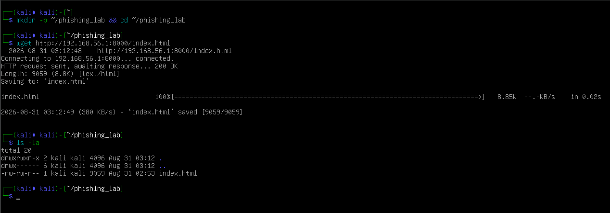
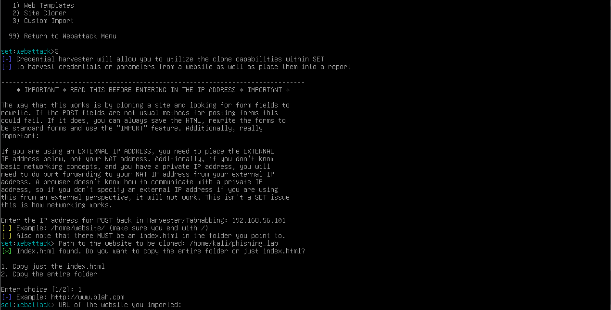
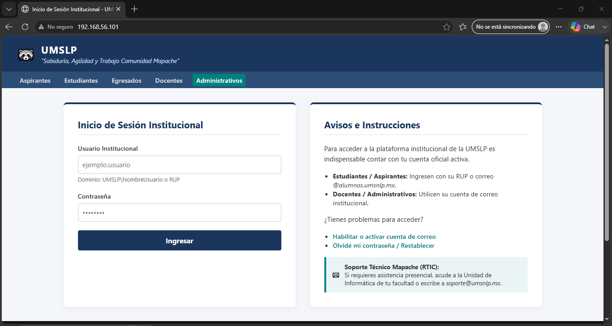
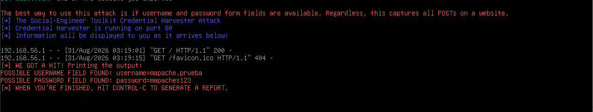

01 // Objetivo de la Práctica
Implementar y analizar, en un entorno de laboratorio controlado y mediante la interfaz de línea de comandos (CLI), una simulación de ingeniería social con Social-Engineer Toolkit (SET). La práctica utiliza una plantilla clonada del portal institucional de la Universidad Mapache de San Luis Potosí (UMSLP) importada a Kali Linux para comprender el funcionamiento técnico del robo de credenciales y determinar los controles defensivos requeridos.
02 // Entorno de Laboratorio y Optimización CLI
Para optimizar el uso de recursos de memoria RAM (asignación de 960 MB), la máquina virtual Kali Linux fue operada exclusivamente en Modo Consola (Línea de comandos / CLI). Se estableció una red interna privada de tipo Host-Only entre la máquina virtual y el sistema anfitrión.
Máquina Atacante (Servidor SET)
OS: Kali Linux 2026.x (Modo CLI sin GUI)
IP Asignada: 192.168.56.101
Servidor Web: SET (Credential Harvester) escuchando en puerto 80 HTTP.
Ruta Plantilla: /home/kali/phish_lab/index.html
Sistema Anfitrión / Víctima
OS: Windows Host (IP: 192.168.56.1)
Servidor Transferencia: Python HTTP Server en puerto 8000 (python -m http.server 8000).
Cliente: Navegador web interactuando con la IP del atacante.
03 // Detalle de la Configuración en Consola (CLI)
1. Preparación del Directorio e Importación de Plantilla UMSLP
Desde la terminal de Kali Linux, se creó la estructura de carpetas limpia y se transfirió la plantilla HTML institucional servida desde el sistema anfitrión Windows:
# Creación del directorio de trabajo
mkdir -p ~/phishing_lab && cd ~/phishing_lab
# Descarga de la plantilla HTML personalizada (Portal UMSLP)
wget http://192.168.56.1:8000/index.html
# Verificación de integridad del archivo importado
ls -la2. Configuración del Módulo Credential Harvester en SET
Invocación de Social-Engineer Toolkit mediante privilegios administrativos e importación de la ruta raíz local:
sudo setoolkit
// Navegación de menú:
// 1) Social-Engineering Attacks
// 2) Website Attack Vectors
// 3) Credential Harvester Attack Method
// 3) Custom Import
[-] IP address for the harvester: 192.168.56.101
[-] Path to root directory: /home/kali/phishing_lab
[*] WEBSERVER ON PORT 80 STARTED04 // Evidencias de Ejecución y Capturas




05 // Recursos e Informe Completo
Puedes consultar el informe formal generado en PDF con el análisis detallado de tráfico HTTP POST, transferencia de archivos por línea de comandos y controles defensivos:
05 // Página ficticia
Puedes consultar la página ficticia con la que se realizo la práctica:
06 // Indicadores de Phishing y Controles
La conexión se realiza a través de HTTP en el puerto 80 sin certificado digital validado por una Autoridad Certificadora (CA) ni esquema HTTPS.
Acceso mediante dirección IP numérica (http://192.168.56.101) carente de un FQDN o dominio institucional verificado (ej. login.umsnlp.mx).
El formulario envía las solicitudes `POST` de forma expuesta hacia el servidor de escucha de SET, permitiendo su lectura inmediata en la consola.
Despliegue de tokens dinámicos o llaves de seguridad físicas; invalidan el acceso aun cuando el usuario y la contraseña hayan sido interceptados.
Forzar políticas HTTP Strict Transport Security (HSTS) y bloqueo preventivo de IPs numéricas o sitios no categorizados en la red corporativa.
07 // Conclusiones Técnico-Éticas
El uso de la línea de comandos en Kali Linux reduce sustancialmente la carga de hardware, permitiendo desplegar servicios defensivos y ofensivos de prueba con un consumo mínimo de memoria RAM.
Mediante herramientas de importación personalizada en SET, cualquier interfaz visual HTML/CSS puede convertirse en un vector de captura en minutos, resaltando la necesidad de no confiar únicamente en la apariencia visual.
La prevención efectiva del phishing combina controles de red automatizados (MFA/DMARC) con el entrenamiento continuo de los usuarios para la identificación de anomalías en URL y protocolos.